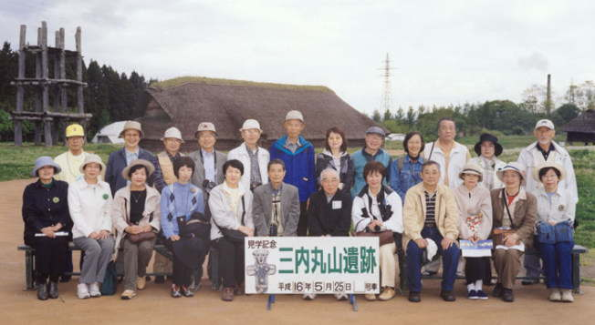
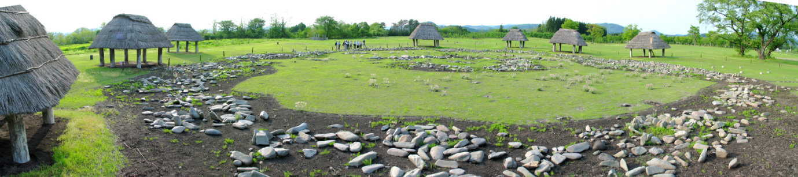

| 見たい項目をクリックして下さい | |||||||||
|
| 行 事 の記 録 （詳 細 - ２２） |
|
東北遺跡巡り さいかちの会創立１周年記念特別企画
|
| 掲載日 ０４−７−２０ |
|
行 事 名 |
東北遺跡巡り |
|
研 究 部 会 |
特別企画 |
|
実 施 日 |
０４年５月２５日（火）〜２６日（水） |
|
実 施 場 所 |
三内丸山など青森県の遺跡〜大湯環状石など秋田県の遺跡 |
|
参 加 者 |
２１名 会員１３名 （尾田、小方、小野寺、小林、佐伯、清水、須藤、鈴木、砂川、 坪井、西田、野々山、福野） 会員外（１期）８名 （飯田、大川、岡、片平、浄園、清瀬、広脇、藤田） |
| 記 録 | １期の皆さん |
|
概 要 |
（１日目） |
| ● 三内丸山遺跡 広脇紀久子 ５月２５日、７時１５分羽田集合。７時４５分、飛行機は予定通り飛び立ち青森空港へ。なんと１０時には三内丸山の遺跡に立っていました。家にいるときは新聞読んだり、まだぐずぐずしている時間なのに、もう三内丸山に着いたんだ、とその効率のよさに感激です。 広々とした丘陵には、写真で見た巨大な柱や、大型竪穴住居などが悠然と存在していました。 佐伯さんのご紹介で、考古学の重鎮でいらっしゃる村越潔先生が一緒に村中を歩きながら、説明してくださいました。この遺跡は古く江戸時代から知られていて、我が国の土器発見記録としてはおそらく最古と言われる「永禄日記」に、元和９年（１６２３年）、大小の土偶発見についての記録があるそうです。 青森県は、この地に県営野球場の建設を定め、平成４年から工事前の緊急調査のための発掘を開始し、翌年からは野球場の建設工事も同時進行の状態で進められていたとか。 ところが調査がすすむにつれ、５５００年〜４０００年前の縄文時代の膨大な遺構と遺物が発見され、平成６年８月には遺跡保存のため、ついに野球場建設の中止が決定されたそうです。その頃の写真を見ると、野球場のスタンド建設がかなり進んでいて、遺跡発掘とスタンドが混然とした状態であることがよく判りました。青森県ってえらい！ ここまで進んでいた野球場建設を白紙に戻して遺跡公園を造ったんだから。 三内丸山から出てくる黒曜石は、北海道や長野産で交易によるものと考えられる、食料の栗は植栽されたもの（ＤＮＡ鑑定による）、巨大な建造物の柱穴はすべて４．２㍍間隔などと聞くと、その文化水準の高さから、発達した「言語」が当然存在していたはず。共通の言語を使わなくては黒曜石は買えないし、大きい柱は立てられない。縄文人が１５００年間住んだここ三内丸山では、どんな言葉が使われていたのか、文字の痕跡は？ 想像は膨らむばかりです。 切り込みを入れた木材が発掘された所に、正倉院のような高床式倉庫が復元されていてびっくりしました。校倉造りはさておき、切り込み一つを造るにしても、正確さが必要となり、このへんにも縄文尺が存在したのではないか、と考えられる要因があり、豊かな言語生活の様子がしのばれます。 エジプトのロゼッタストーンのようなものが出てこないかしら？と私の興味の対象は急遽５０００年前に遡ってしまいました。 |
Ａ |
|
|||||||||||||||||||||
|  | |||||||||||||||||||||||
| 案内下さった村越潔先生を真ん中に、現地のボランティアさんと一緒に記念写真 | |||||||||||||||||||||||
| ● 亀ヶ岡遺跡 飯田恵美子 東北縄文時代の代表、三内丸山遺跡と亀ヶ岡遺跡巡りが意外に早く実現して、遠いと思っていた青森がグンと近くになりました。 着いてからは各遺跡の資料館に入るのが楽しみで、日頃の不勉強を挽回したく説明に耳を傾けたのに、帰る頃には頭はおぼろげ、資料を片手に小声で 「行ってきました」 と囁く有り様です。それでも一つ二つ三つは思い出しますから、やっぱり見ることに価値があったようです。 訪れた遺跡の中で印象深かったのは、亀ヶ岡遺跡の資料館にあった遮光器土偶と土器のあの美しい紋様です。縄文晩期の時代にこのような紋様を生み出す美意識を持ち合わせていたということに圧倒されました。入り込んだ線を幅広く大らかに描いて、素朴ながら洗練されていて味のあるものでした。 亀ヶ岡の泥炭層から出土した遺物を江戸の好事家が競って求め、オランダあたりまで流れていたということですから、いつの時代でも芸術性の高いものは人の心を動かす魅力に溢れているということなのでしょう。紋様集があるのなら一冊手に入れて、是非じっくり見たいものです。 5000年前の長野県棚畑遺跡から見つかった土偶「縄文のビーナス」や3500年前の新潟県の遺跡から多く出てきた火焔土器、そしてこの遮光器土偶とどれを見ても完成された「作品」に見とれてしまいますが、ここに来て更に縄文時代の文化の高さ、心の豊かさを改めて認識した一日になりました。 三内丸山の資料館で、東北北部と北海道南部から共通する土器等が出土し、当時から交流があったとことを示す図が貼ってありました。それを見ながら同じ北海道南部の伊達市で一日だけ手伝った若かりし頃の発掘のことを思い出しました。ところがそれがどういう発掘内容だったのかは全く覚えていないのです。ただ人類学の先生と一緒でしたので目的は人骨にあったのかも知れません。発掘現場は図に示された場所と近くですから、当事の場所からも亀ヶ岡式なる土器が出ていたのだろうかと気になります。土器片を繋げて修復していらした郷土史家のところで話もしていたのに、今となっては本当に勿体ない！ 青森，秋田あたりにはアイヌ語の地名が多いとのこと、その言葉を使う人達が住んでいたということですから、「縄文人の言葉」として創られた言葉も津軽言葉との関わりだけでなく、自然の成り行きとしてはアイヌ語の要素が入ってもおかしくないのではと思いました。ちなみにバスで通ってきた比内はアイヌ語で「平野を流れる川」だそうですが、資料によって多少違っていました。 ひんやりした空気が気持ちよく，リンゴの花もちらっと見えて，ニセアカシアが満開の季節。バスの窓からは岩木山が行ったりきたり。山間の景色を楽しみ、お弁当を美味しく頂きながら、東北の地を移動した贅沢な二日間でした。 快適な旅を企画して下さった「さいかち会」の方がたに感謝しております。 |
|
| ● 十三湊 清瀬喜美 ３月のある日、歴博ボランティア室で三内丸山旅行のお誘いちらしを見たとき、「あっ！すごーい！絶対行こう！」と思わず口にしていました。 友人・家族などと計画しかかったこともありましたが、関西生まれの私には青森は、ハードルが高かったのです。２期の方におんぶしちゃおう！ お世話になります。 というわけで５月２５日、早起きはお得意の私はうきうきしながら機上の人となったのでした。幸い窓際の席で、離陸当時は霞ヶ浦なども確認できたので、北上川が見えるかな、と期待していましたが、雲が増えてきて松島がかろうじて見えただけで、雲の中いつのまにか青森に着いていました。 あこがれの三内丸山は期待通りすばらしかったのですが、その日最後に見学した市浦町の十三湊は予想を越えて圧巻でした。資料を見て頭の中でイメージしていたのですが実際にその地へ行って、地形を目の当たりにすると、潟湖の雄大さに圧倒されました。 特に解説してくださった方が丘陵の上にある唐川城跡へ案内してくださって、高所から十三湖を見ると、その立地もよく理解できました。中世の十三湖はもっと水深が深かったので、良き湊として機能していたことでしょう。 大きな遺跡のあるところは、現在は要衝の地でもなくても、過去のある時期には要衝の地だったのですね。三内丸山も今は海岸線からは遠い内陸部でイメージしにくいですが、数千年前は山海の珍味にありつけるような
「うまし土地」 だったにちがいありません。帰省のついでに行った出雲大社のある場所も弥生時代には十三湊と同様に潟湖（ラグーン）を形成していて、入海があり良港だったようですが、今は完全に陸化して出雲平野となっています。でもまっ平らな土地なのでなんとか海辺に建っていたという古代出雲大社をイメージすることができました。 |
Ａ |
|
| ● 岩木山、岩木山神社 片平明子 岩木山、８合目まででしたが、地図のように海岸線が１８０度見えました。前日行った十三湖と七里長浜もくっきりと見え、反対側には白神山地の山々が…。（写真参照でお願いします。）駐車場の端に残雪がたくさんありました。北に来たんだなぁと雪をつついてみると、以外に柔らかかったです。山頂では３６０度の景色とのことでしたが、時間がないので行けず残念でした。次回は是非ゆっくり、とここでも思いました。 岩木山神社。最初の鳥居の額も、次の鳥居の額も何も書いてないように見えました。消えてしまったのでしょうか、それとも最初から書かれなかったのでしょうか。参道を歩いているとカナカナ…とひぐらしのような声が聞こえました。この季節に蝉がいるわけがないと、他の虫説、カエル説、鳥説…いろいろ出ましたが答えはエゾハルゼミという蝉でした。 参道の先には上り狛？下り狛？のセットと楼門。二階建ての立派な門で、左右の守りはなぜが仁王ではなく狩衣姿が。おひなさまみたいでした。 拝殿では祈祷の最中で、祝詞（でいいんでしたっけ？） があげられていたのをしっかり見学！ 初めて見る金属製の幣にみんな注目。あとで宮司さんに聞いたところ、幣には紙製、布製、金属製と３種類あるそうです。そこで見た幣のことを宮司さんは 「さげかね」 と言っていたと思います。 拝殿は赤、本殿は黒色。これは建築時期が違うからとのことでした。拝殿と本殿の間は７５年あり、その間に流行りの建築様式が変わったとか。本殿は日光の陽明門と同時期で、きらびやかなものが好まれた時代、黒色は漆を塗ったからだそうです。 拝殿奥の白雲神社の池には白い卵がたくさん投げ込まれていました。昔から占いに使われた池でなぜか卵が入れられる。池は神様が遊ばれる所なのできれいにしておきたい、と神社側では禁止しているそうです。池から引き返すところで、拝殿から出ていらした宮司さんにぱったり出会い少しお話をうかがうことができました。あれもこれもと聞くわたしたちに浅葱色の袴の宮司さんはなぜか関西のイントネーションで丁寧に答えてくださいました。感謝！ というわけで、集合時間ぎりぎりにバスに戻り、その前にしっかりりんごのアイスはゲット！ アイス屋のおばさまたちのお見送りを受けながら次の目的地へとバスは向かいました。 |
Ａ |
|
| ● 津軽藩「ねぷた村」 岡 洋子 弘前では、「ねぶた」ではなく 「ねぷた」と申します。そもそも、由来は、夏の睡魔を払う、精霊流しが原型とか。青森訛りで、「ねぶたっちゃ」
(違いましたっけ！） が、「ねぷた」 になったそうです。 |
Ａ |
|
||||
| ブロードバンドのお方は、右の画像をクリックすると、あなたのパソコンの
Windows Media Player が自動的に起動し、ビデオと音声で津軽三味線の生演奏をご覧になれます。ビデオを全画面表示にして、お楽しみ下さい。 ご覧になった後は、Windows Media Player を閉じ、現在のページにお戻り下さい。 |
| ● 伊勢堂岱遺跡 大川道子
伊勢堂岱遺跡は「生」の遺跡でした。発掘が進行形なのです。大館能代空港の道路建設計画の時に発見され、調査は今年で7年目になります。日本海に注ぐ米代川には旧石器時代からの遺跡が２７もあり、伊勢堂岱遺跡は縄文後期のものです。 |
Ａ |
|
| ● 大湯環状列石 藤田雅子 大湯ストーンサークル館（2002年４月開館）ではボランティアガイド（40名登録）のご案内を受け、出土した16種から再現した「縄文の森」を抜ける遊歩道から海抜180ｍ
「舌状をした風張台地」 南端の遺跡公園に入りました。 台地の西にはウッドサークルとその内部の巨大な栗の5本柱の復元物、こぶし大の石を円形に敷き柄鏡様の出っ張りがある配石遺構。これは環状列石より後の時期の物だそうで、50㎝下の土中に保護した遺構を模して、その上に 「シンプルに」 をコンセプトに復元されています。 公園の中央には同心円状に外帯・内帯の２重の環をもつ２基の環状列石 （西側が径48ｍの 「万座遺跡」、県道66号を挟み、90m離れて 「野中堂遺跡」 径42ｍ） がありました。展望台からみると確かに円い。この２つは 「そのものを見てもらいたい」 との意向から調査時のまま残されています。 環状列石の外帯に添って６本柱の掘立柱建物、その外側に４本柱の掘立柱建物さらにその外側にはフラスコ状の貯蔵穴多数が環状に配置されていたそうです。６本柱、４本柱あわせて８棟、茅屋根を葺いて復元されています。万座・野中堂の２つの環状列石は同じ時期につくられたそうです。 200基以上の配石遺構（十数個の石を1〜2ｍの円形や楕円形に配列、形態はおおむね8類に分類され、下に土壙がある）を環状に配置、２つの環状列石外帯直径の和90ｍが列石間の距離に等しい上に内帯内径の倍が内帯外径、内帯外径の３倍が外帯外径と整数倍な事、環状列石の外帯と内帯の間にある日時計状列石（中央に石を立て東西南北に当る所に石を配置）を2つの環状列石の中心を結ぶ線上（当地の夏至の日没方向）に配置する等から綿密に計算されて造られたことがわかりました。 環状列石を構成する石は4ｋｍ〜7ｋｍ離れた安久谷川の石英閃緑?岩で平均重量30㎏、（大は200㎏）、2つの遺跡合わせて
7,200個あまりあります。 |
Ａ |
|
|||||||
| 右へスクロールしてストーンサークルのパノラマをご覧下さい →→→ | |||||||||
|  |
| 直径４８ｍの万座環状列石は中央近くに「日時計状組石」がある。外周には６本柱と４本柱の建物が交互に６軒ずつ建てられていたらしい。時刻・方位に関係する祭祀の場であろうか。 |
| 以上、さいかちの会の会員ではありませんが一緒に活動している横浜市遺跡公園ガイドボランティア１期の皆さんの合作でした。 合せて、さいかちの会会員による 「墨絵と短歌で綴る東北遺跡巡り」 をご覧下さい。 |
|